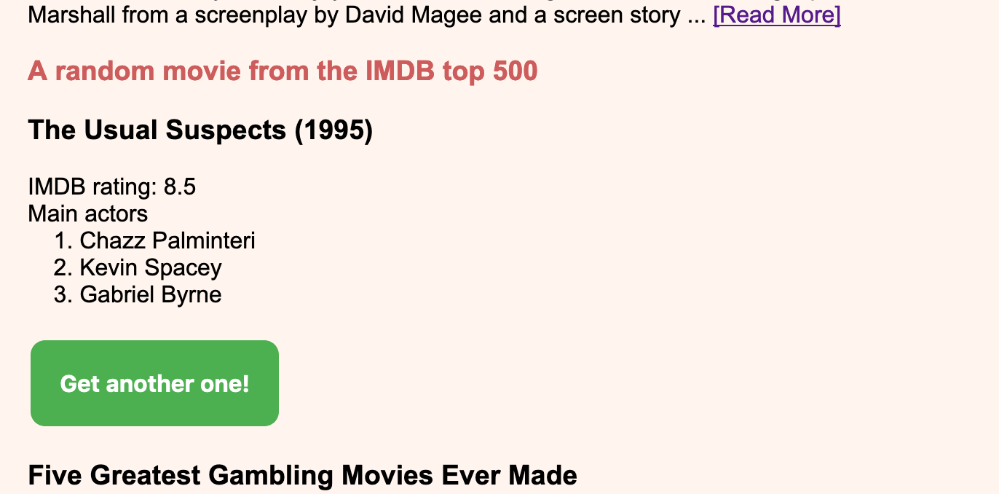
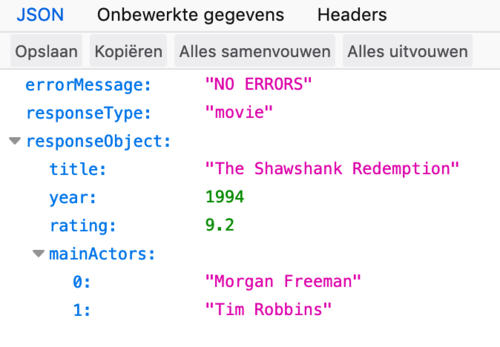

37. A simple web service using Ajax#
37.1. Introduction#
Modern web applications are often composed of a “main” backend controller serving the view and “helper” backend controllers serving only data for (updating) parts of the view. Many web apps have even taken this further; the backend only serves an initial view and is mainly responsible for serving data packages. The Javascript library Vue.js is a good example of this.
In this post, we’ll start simple, building a very basic web service and a simple consumer of the service. Focus is still on the backend.
You will see a dedicated servlet using the GSON (Google JSON) library to convert Java objects to JSON (JavaScript Object Notation), and a client that requests and processes this data.
37.1.1. The components of Ajax#
37.1.1.1. JSON#
JSON – JavaScript Object Notation is the best format to exchange data from one web-based system to another It is very much like a complex map literal. Here is an example that holds data on some movies:
{"errorMessage": "NO ERRORS",
"responseObject": [
{"title": "The Shawshank Redemption",
"year": 1994,
"rating": 9.2,
"mainActors": ["Morgan Freeman", "Tim Robbins"]
},
{"title": "The Dark Knight",
"year": 2008,
"rating": 9.0, "mainActors": ["Christian Bale,", "Heath Ledger"]
}
]
}
Most browsers have a nice default representation of JSON, as long as you specify the correct content-type when formatting the servlet response:
response.setContentType("application/json;charset=UTF-8");
37.1.1.2. The view#
This is the view that is going to consume the movies Ajax service:
<!DOCTYPE html SYSTEM "http://www.thymeleaf.org/dtd/xhtml1-strict-thymeleaf-4.dtd">
<html xmlns="http://www.w3.org/1999/xhtml" xmlns:th="http://www.thymeleaf.org">
<head>
<meta http-equiv="Content-Type" content="text/html; charset=UTF-8"/>
<title>Movie addict</title>
<link rel="stylesheet" th:href="@{/css/main.css}" href="../../css/main.css">
</head>
<body>
<h1>I am a movie addict</h1>
<p>
Hi, welcome to my blog about movies. Just don't get hooked :-)
</p>
<div>
<h3>Review: Aquaman Is Good Enough</h3>
<p>Aquaman spans the vast, visually breathtaking underwater world of the seven seas and reveals the
origin story of half-human, half-Atlantean Arthur Curry (Jason Momoa), which takes him on the
journey of his lifetime—one that will not only force him to face who he really is, but to discover
if he ... <a href="#">[Read More]</a></p>
</div>
<!--more movies-->
<div>
<h3><span>A random movie from the IMDB top 500</span></h3>
<div id="random_movie">
<span>Click the button to show info on one of the best movies ever made!</span>
<br/>
</div>
<button id="get_random_movie">Get me one!</button>
</div>
<div>
<h3>Five Greatest Gambling Movies Ever Made</h3>
<p>Everybody needs a role model. Even we gamblers are looking at the silver screen trying to find a hero
worth looking up to. And not even the best online casino could help it. We want to see a decisive
person able to make their own luck, someone, who takes a ...<a href="#">[Read More]</a></p>
</div>
<!--more movies-->
<script
src="https://code.jquery.com/jquery-3.3.1.min.js"
integrity="sha256-FgpCb/KJQlLNfOu91ta32o/NMZxltwRo8QtmkMRdAu8="
crossorigin="anonymous"></script>
<script type="application/javascript">
function processMovie(result){
console.log("processing " + JSON.stringify(result));
var movie = result.responseObject;
var movieHtml = "<h3>" + movie.title + " (" + movie.year + ")</h3>";
movieHtml += "IMDB rating: " + movie.rating + "<br />Main actors <br />";
$.each(movie.mainActors, function(i, actor){
movieHtml += " " + (i+1) + ". " + actor + "<br />";
});
movieHtml += "<br />"
console.log(movieHtml)
$("#random_movie").html(movieHtml);
$("#get_random_movie").text("Get another one!");
}
function getRandomMovie() {
console.log("fetching movie");
var movie_url = "movie_service?request_type=random";
jQuery.getJSON({
url:movie_url,
success: function(result) {
processMovie(result);
}
});
};
$("#get_random_movie").click(getRandomMovie);
</script>
</body>
</html>
There are several things to note:
The “Read More” links are dummies.
There are two
<script>tags:one loading the jQuery javascript library
one for handling the button-click event:
$("#get_random_movie").click(getRandomMovie);
The
getRandomMovie()function forms an Ajax request for the resourcemovie_servicewith request parameter?request_type=random.The
processMovie()function is responsible for converting the JSON object it receives from the backend into an html view. This is how the page looks in the browser

37.1.1.3. JSON served by servlet#
In order to serve JSON from a servlet, you simply need to skip the view part. Instead, directly write your result to the browser. The Google GSON library is a big help: it can transform your Java object graph into a correct JSON representation. For the above movies example, I created a simple (inner) data class to represent my response:
private static class JsonResponse {
String errorMessage = "NO ERRORS";
String responseType = "movie";
Object responseObject;
}
And this is how it is created and converted into JSON using the GSON library:
protected void doGet(HttpServletRequest request, HttpServletResponse response) throws ServletException, IOException {
String requestType = request.getParameter("request_type");
response.setContentType("application/json;charset=UTF-8");
final PrintWriter writer = response.getWriter();
JsonResponse jsonResponse = new JsonResponse();
if (requestType.equals("best")) {
//code omitted for brevity
} else if (requestType.equals("random")) {
List<Movie> movies = Movie.getAllMovies();
Movie selected = movies.get((int)(Math.random() * movies.size()));
jsonResponse.responseType = "movie";
jsonResponse.responseObject = selected;
}
else {
jsonResponse.errorMessage = "unknown request_type: " + requestType;
}
//convert to JSON and write to response
Gson gson = new Gson();
writer.write(gson.toJson(jsonResponse));
writer.flush();
}
That’s it. An Ajax service serving a single page element. No page refresh needed for updating the view.
When the button is clicked:

You can also test the service without any view: simply request the resource:
michiel@Michiels-MBP:~/onedrive_java/java_gitbook$ curl http://localhost:8080/movie_service?request_type=random
{"errorMessage":"NO ERRORS","responseType":"movie","responseObject":{"title":"Forrest Gump","year":1994,"rating":8.7,"mainActors":["Tom Hanks","Robin Wright","Gary Sinise"]}}
Or in your browser: paste the url in the location bar:

(This is the Firefox rendering)